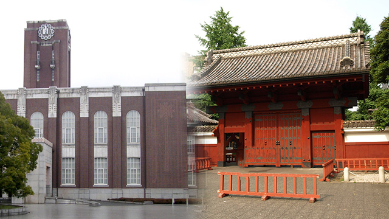

前回の記事（大学入試制度改革と国際バカロレア）では、2020年の大学入試改革以降のことをテーマに書いてみました。今回は2016年から2020年「まで」の状況を見ていきましょう。
世間では盛んに「2020年」がプッシュされていますので、一般的には変化は「2020年以降」に起こると考えられています。しかし、それは大きな間違いです。今回の変更は、戦後の教育制度の歴史上稀に見る大きなものになりますから、そのための準備も時間をかけて行われます。そしてこの「準備」というのはつまり、現状の制度の中で改革のエッセンスを小出しに組み込んでいくこと。その動きは、今年（2016年度）の入試にもすでに現れています。
AO入試と推薦入試
一言で大学入試といっても、その内実は多岐にわたります。
最も多くの生徒が受験する「一般入試」。これは試験一発勝負のもので、高校の内申点や在学中の取り組みについては「全く」考慮されません。
次ぎに「推薦入試」。これも中身は多種多様。
まずは国立と私立で少し異なります。私立の場合には、大学側が各高校に推薦枠を割り振り、高校はその割り当て人数分生徒を推薦する「指定校推薦」があります。この制度は国立大学には存在しません。
国立・私立ともに存在するのが「学校推薦」と「自己推薦」です。「学校推薦」は高校の校長による推薦（当然内申や在学時の取り組みを基準に）で、「自己推薦」は学校による推薦がもらえない場合（大学が求める基準に内申点が達していない）に、自分で自分を推薦する（学校推薦よりも基準が低い）ものです。今はやりのAO入試も広義ではこの自己推薦に含まれるといってよいでしょう。
| 一般入試 | 試験一発勝負。内申点は考慮されない。 |
|---|---|
| 指定校推薦 | 大学側が各高校に推薦枠を割り振り、高校はその割り当て人数分生徒を推薦する。 |
| 学校推薦 | 高校の校長による推薦。内申点や学校生活を基準にする。 |
| 自己推薦 | 面接や小論文等での自己アピールが評価対象となる。高校からの推薦を必要としない。 |
| AO入試 | 大学との適性が重視される。高校からの推薦を必要としない。 |
「指定校推薦」と「学校推薦」「自己推薦」は同じ推薦ですが、決定的な違いがあります。それは、「指定校推薦」は推薦がとれてしまえば必ず合格するが、「学校推薦」「自己推薦」は推薦がとれたから合格するとは限らない、ということ。
特に国立上位大学になればなるほど不合格になる可能性は高くなります。というのも、「推薦」とは銘打っているものの事実上の学力試験が必須であり、その内容も一般入試より難しい場合が多いのです。一般入試と異なり、対策の仕方もかたまっていませんから、生徒たちはほとんど対策をせずに「地力」で勝負することになります。そのため、一般的な塾では「推薦は受からないから、試験が一回増えた、くらいの感覚で」と指導することも多いようです。
推薦入試の問題点
2020年の入試改革で「改革すべきこと」とされているのが、入試の「一発勝負」です。現行の制度では、試験前にどれほどの努力を重ねてきても、試験日にインフルエンザにでもなってしまえばそれで終わりです。また、受験生は極度のプレッシャーにさらされるため、本当の実力を発揮できない場合もあります。このような制度上の問題は生徒たちの「本当の力」をはかる障害になっているというのです。
このような議論は、実は最近始まった話ではなく、かなり前から言われていました。「学力試験でははかれない能力を持った生徒をすくい上げる」というのが推薦入試の目的であると思われていますが、それ以外にも上述した「一発勝負」を避ける意図があります。
こう見てみると、推薦入試が増えていくのはとてもよいことであるように感じます。しかし、推薦入試にはある固有の問題があり、それがゆえに上位大学は敬遠してきました。
その問題とは、「学力不足」です。
正直なところ、上位大学になればなるほど、一般入試で要求される学力はすさまじいものになります。学力を測る試験がない指定校入試は当然として、学力試験のある学校推薦・自己推薦であっても一般入試の高水準には届きません。もちろん大学側もそんなことは織り込み済みで「それでもあえて」やっているわけですが、学力と引き替えに手に入れたはずの「学力試験ではかれない能力」は、正直学力と釣り合わないのが現実です。特に指定校推薦に至っては、偏差値40台の生徒が偏差値70近い大学に入学することもあり、入ったはいいものの、どれほど頑張っても大学の講義について行けない場合があります。
東大・京大が推薦入試を開始
そんな状況の中で、日本の大学ヒエラルキーの頂点と言える東大と京大が、今年度から推薦入試を導入します。意図は上述した「学力試験ではかれない能力を持った生徒」の確保ですから、これまでと変わりません。ただし、学力不足は大学側も懸念しており、たとえば東大では、センター試験の点数が一般入試の合格者水準と同程度であることを合格の目安としています。また、推薦入試の本試験である面接や筆記試験も難易度マックスになる可能性が高く、正直なところ一般入試と「出題傾向をガラリと変えた」だけといってもよいでしょう。
しかし、そうであったとしても、やはり東大・京大が推薦入試と銘打った入試を行うことには意味があります。これは大学内での様々な問題意識（国際的な低評価など）から出たのはもちろんでしょうが、そこに国の大学入試改革の方向性からの影響も見て取ることができます。
二極化はどんどん進む
東大・京大をはじめとしたほんの一握りの上位大学（受験生人口の約5％）においては、推薦入試はある程度国の意図通りに進むでしょう。しかし、中堅以下の大学においてはこれまで以上の地盤沈下が起こる可能性が高いでしょう。生徒が集まらない中で「敷居を低くする」ために導入してきた推薦入試ですが、それに国がお墨付きを与えた形になりますから。その結果としてこれまでギリギリやせ我慢で維持していた生徒の学力が一気に低下し、事実上大学とはいえないところまで落ちてしまうかもしれません。
一握りの上位層とその他大勢という構図はこれまでも同じでした。しかし、問題になっていたのは「上位層」と「その他大勢」が建前上「同じ」であり、「同じ」であるがゆえに「同じカリキュラム」で授業が行われていたということです。その結果建前と実態のずれが甚だしくなり、効率的な知識の伝達に不具合が生じていたのです。この状況を変えるためには、二極化をより明確にする必要があります。くっきりと溝が皆に見えて初めて、上位層とその他大勢が「違う」ものであることに皆が納得するでしょう。そして、「違い」がはっきり分かれば、それぞれに対して異なったカリキュラムを与えることが可能になります。
推薦入試の拡大や達成度テストなど、今行われている改革は一見「平等を目指した」ものに見えます。試験で白黒をつけてしまうのではなく、すべての生徒に個性に合った活躍の場を与えるための改革。それはとても素晴らしい未来ですが、実はこのキレイな覆いの下にどんなものが隠れているのか、楽しみであり、怖くもあります。
エンライテックの詳細を見る ＞＞